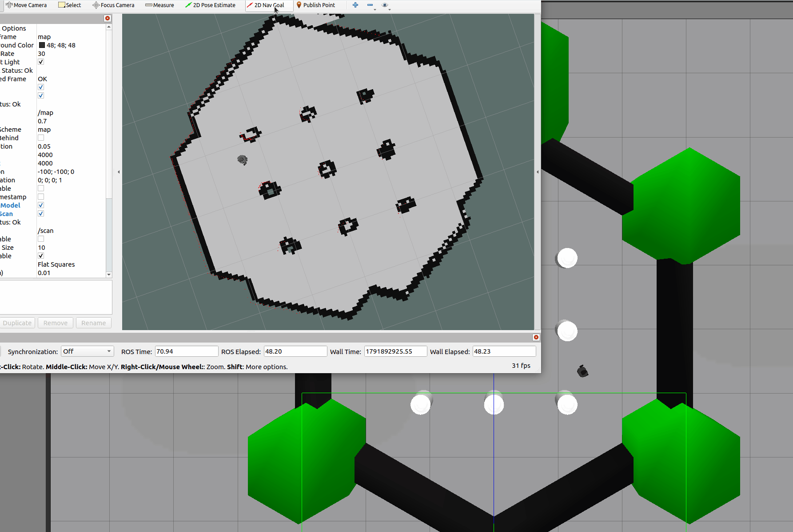

TurtleBot3 仿真自主导航实现与避障参数优化
基于 ROS Noetic 的 TurtleBot3 (Burger) 在 Gazebo 仿真环境下的自主导航功能包。使用 AMCL 定位、DWA 局部规划器，支持 map_server 加载静态地图，通过 RViz 进行 2D Nav Goal 目标点导航。

项目结构概览
turtlebot3_auto_nav/
├── launch/
│ └── main.launch
├── maps/
│ ├── map.pgm
│ └── map.yaml
├── param/
│ ├── costmap_common_params.yaml
│ ├── dwa_local_planner_params.yaml
│ ├── global_costmap_params.yaml
│ └── local_costmap_params.yaml
├── rviz/
│ └── turtlebot3_nav.rviz
├── CMakeLists.txt
└── package.xml
一、环境准备与核心依赖安装
在使用本项目前，请确保已安装 TurtleBot3 相关依赖及 DWA 局部规划器：
# 1. 安装 TurtleBot3 相关包
sudo apt install ros-noetic-turtlebot3 ros-noetic-turtlebot3-gazebo ros-noetic-turtlebot3-bringup
# 2. 安装 DWA 局部规划器
sudo apt install ros-noetic-dwa-local-planner
# 3. 编译工作空间
cd ~/nav_ws
catkin_make
网络配置
如果终端疯狂刷屏 Exception sending a multicast message:Network is unreachable，请在 ~/.bashrc 末尾添加以下环境变量（强制使用本地回环，避免多网卡冲突）：
echo "export ROS_HOSTNAME=localhost" >> ~/.bashrc
echo "export ROS_MASTER_URI=http://localhost:11311" >> ~/.bashrc
source ~/.bashrc
二、启动流程
注意：每个新终端都需先执行 export TURTLEBOT3_MODEL=burger（建议写入 .bashrc）。
【终端 1】启动 Gazebo 仿真世界
export TURTLEBOT3_MODEL=burger
roslaunch turtlebot3_gazebo turtlebot3_world.launch
【终端 2】启动导航与 RViz
# 强制设置仿真时间
rosparam set use_sim_time true
# 激活环境
cd ~/nav_ws
source devel/setup.bash
# 启动导航
roslaunch turtlebot3_auto_nav main.launch
三、常见报错与解决方法
1. 终端疯狂刷屏 "Network is unreachable"
原因：虚拟机多网卡多播冲突。
解决：修改 ~/.bashrc 强制使用 localhost（见第一章）。
2. 报错 "Timed out waiting for transform from base_link to map"
原因：TF 树断裂，缺少 base_link。
解决：main.launch 已自动启动 robot_state_publisher（robot_description 由 Gazebo 的 launch 写入参数服务器），正常按本文启动流程操作即可。若仍报错，先用 rosnode list 确认 /robot_state_publisher 是否在运行，缺失时单独运行 roslaunch turtlebot3_bringup turtlebot3_remote.launch 补上。
3. 报错 "Failed to create the dwa_local_planner/DWAPlannerROS planner"
原因：缺少 DWA 规划器插件。
解决：执行 sudo apt install ros-noetic-dwa-local-planner，并重新编译工作空间。
4. 报错 "Extrapolation Error: Lookup would require extrapolation into the future..."
原因：虚拟机算力不足导致 TF 时间戳微小延迟（错位几毫秒到几秒）。
解决：在 launch 文件中的 amcl 和 move_base 节点内加入 <param name="transform_tolerance" value="1.0" />，并强制所有节点使用 use_sim_time。
5. 小车遇到障碍物原地转圈，报错 "Aborting because a valid plan could not be found"
原因：CPU 算力枯竭（日志显示 Map update loop missed its desired rate... loop actually took 4.0 seconds），导致代价地图更新滞后，DWA 找不到可行路径。
解决：
- 执行
killall gzclient关闭 Gazebo 的 3D 图形界面（后台物理引擎还会继续运行）。 - 降低
dwa_local_planner_params.yaml中的vx_samples和vtheta_samples（参考本 README 的 10 和 20）。 - 降低
local_costmap_params.yaml的update_frequency为 5.0。 - 在 RViz 左侧关闭
LaserScan的Decay Time（设为 0）以及PointCloud等非必要显示层。
四、RViz 实操与技巧
- 保存配置：点击
File->Save Config As，保存在项目rviz/目录下。以后通过-d参数加载，或写入main.launch自动启动。 - 初始化定位：使用
2D Pose Estimate时，必须按住鼠标左键在地图上拖动并画出箭头（起点是位置，方向是车头朝向），松开鼠标。等待红色激光点完全贴合地图黑色边缘。 - 发布导航目标：使用
2D Nav Goal时，同样按住鼠标左键拖拽，画出目标点和期望到达的车头方向后松开。